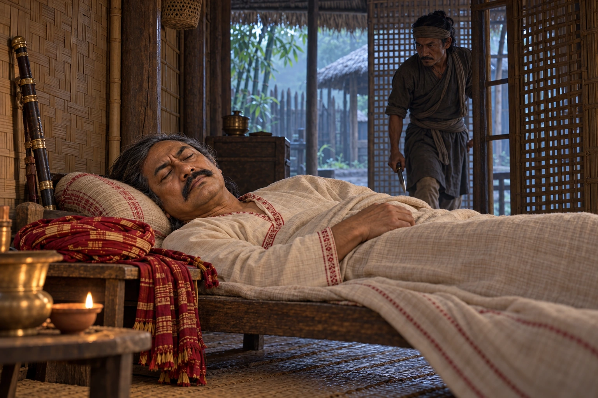

Murder of Laluk Sola Borphukan
1680 · Six kings in nine years

The Borphukan who sold Guwahati to the Mughals is killed by his own bodyguard, ending his hold over the boy-king Sulikphaa.
Sulikphaa is not physically shown or depicted ordering the killing.
People: Laluk Sola Borphukan, Sulikphaa (Ratnadhwaj Singha, Lora Roja)
Open this scene in the interactive archive · Follow this event on MAP